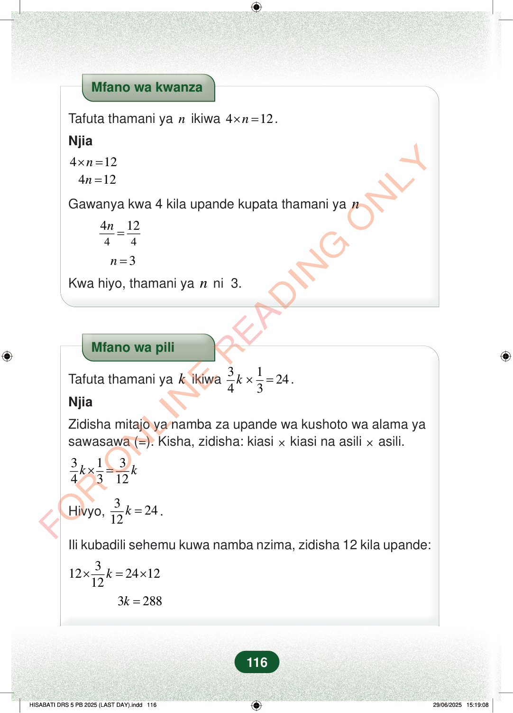

Mfano wa kwanzaTafuta thamani yanikiwa412n×=.Njia412412nn×==Gawanya kwa 4 kila upande kupata thamani yan44412n=3n=Kwa hiyo, thamani yanni 3.Mfano wa piliTafuta thamani yakikiwa312443k×=.NjiaZidisha mitajo ya namba za upande wa kushoto wa alama yasawasawa (=). Kisha, zidisha: kiasi×kiasi na asili×asili.3134312kk×=Hivyo,32412k=.Ili kubadili sehemu kuwa namba nzima, zidisha 12 kila upande:312241212k×=×3288k=116
Mfano wa kwanza
Tafuta thamani ya n ikiwa 4 12 n × = .
Njia
4 12 4 12 n n × = =
Gawanya kwa 4 kila upande kupata thamani ya n
4 4 4 12 n =
3 n =
Kwa hiyo, thamani ya n ni 3.
Mfano wa pili
Tafuta thamani ya k ikiwa 3 1 24 4 3 k × = .
Njia
Zidisha mitajo ya namba za upande wa kushoto wa alama ya sawasawa (=). Kisha, zidisha: kiasi × kiasi na asili × asili.
3 1 3 4 3 12 k k × =
Hivyo, 3 24 12 k = .
Ili kubadili sehemu kuwa namba nzima, zidisha 12 kila upande:
3 12 24 12 12 k × = ×
3 288 k =
116
Mfano wa kwanza wa kutafuta thamani ya n katika 4 × n = 12. Hatua zinaonyesha kugawanya kila upande kwa 4 na kupata n = 3.Mfano wa kwanzaTafuta thamani ya <math><mi>n</mi></math> ikiwa <math><mrow><mn>4</mn><mo>×</mo><mi>n</mi><mo>=</mo><mn>12</mn></mrow></math>.Njia<math><mrow><mn>4</mn><mo>×</mo><mi>n</mi><mo>=</mo><mn>12</mn></mrow></math>4n = 12Gawanya kwa 4 kila upande kupata thamani ya <math><mi>n</mi></math><math><mrow><mfrac><mrow><mn>4</mn><mi>n</mi></mrow><mn>4</mn></mfrac><mo>=</mo><mfrac><mn>12</mn><mn>4</mn></mfrac></mrow></math>n = 3Kwa hiyo, thamani ya <math><mi>n</mi></math> ni 3.Mfano wa pili wa kutafuta thamani ya k katika 3/4 × k × 1/3 = 24. Hatua zinaonyesha kurahisisha hadi 3/12k = 24, kisha kuzidisha kwa 12 na kupata 3k = 288.Mfano wa piliTafuta thamani ya <math><mi>k</mi></math> ikiwa <math><mrow><mfrac><mn>3</mn><mn>4</mn></mfrac><mi>k</mi><mo>×</mo><mfrac><mn>1</mn><mn>3</mn></mfrac><mo>=</mo><mn>24</mn></mrow></math>.NjiaZidisha mitajo ya namba za upande wa kushoto wa alama ya sawasawa (=).Kisha, zidisha: kiasi × kiasi na asili × asili.<math><mrow><mfrac><mn>3</mn><mn>4</mn></mfrac><mi>k</mi><mo>×</mo><mfrac><mn>1</mn><mn>3</mn></mfrac><mo>=</mo><mfrac><mn>3</mn><mn>12</mn></mfrac><mi>k</mi></mrow></math>Hivyo, <math><mrow><mfrac><mn>3</mn><mn>12</mn></mfrac><mi>k</mi><mo>=</mo><mn>24</mn></mrow></math>.Ili kubadili sehemu kuwa namba nzima, zidisha 12 kila upande:<math><mrow><mn>12</mn><mo>×</mo><mfrac><mn>3</mn><mn>12</mn></mfrac><mi>k</mi><mo>=</mo><mn>24</mn><mo>×</mo><mn>12</mn></mrow></math>3k = 288